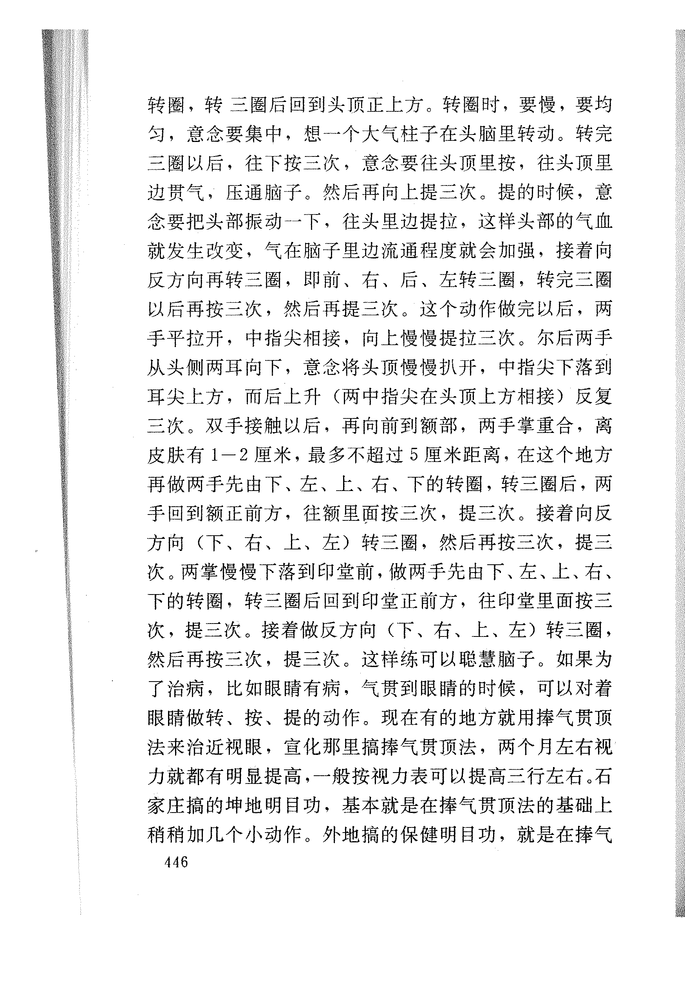

转圈,转三圈后回到头顶正上方。转圈时,要慢,要均 匀,意念要集中,想一个大气柱子在头脑里转动。转完 三圈以后,往下按三次,意念要往头顶里按,往头顶里 边贯气,压通脑子。然后再向上提三次。提的时候,意 念要把头部振动一下,往头里边提拉,这样头部的气血 就发生改变,气在脑子里边流通程度就会加强,接着向 反方向再转三圈,即前、右、后、左转三圈,转完三圈 以后再按三次,然后再提三次。这个动作做完以后,两 手平拉开,中指尖相接,向上慢慢提拉三次。尔后两手 从头侧两耳向下,意念将头顶慢慢扒开,中指尖下落到 耳尖上方,而后上升(两中指尖在头顶上方相接)反复 三次。双手接触以后,再向前到额部,两手掌重合,离 皮肤有1-2厘米,最多不超过5厘米距离,在这个地方 再做两手先由下、左、上、右、下的转圈,转三圈后,两 手回到额正前方,往额里面按三次,提三次。接着向反 方向(下、右、上、左)转三圈,然后再按三次,提三 次。两掌慢慢下落到印堂前,做两手先由下､左､上､右、 下的转圈,转三圈后回到印堂正前方,往印堂里面按三 次,提三次。接着做反方向(下、右、上、左)转三圈, 然后再按三次,提三次。这样练可以聪慧脑子。如果为 了治病,比如眼睛有病,气贯到眼睛的时候,可以对着 眼睛做转、按、提的动作。现在有的地方就用捧气贯顶 法来治近视眼,宣化那里搞捧气贯顶法,两个月左右视 力就都有明显提高,一般按视力表可以提高三行左右。石 家庄搞的坤地明目功,基本就是在捧气贯顶法的基础上 稍稍加几个小动作。外地搞的保健明目功,就是在捧气 446